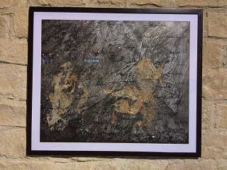

|
"Could creativity exist within chaos?
Chaos, darkness and anarchy; Components of the modern society.
The instability and bombardment caused daily by social media leads to dead
ends; yet at these occasions new vents are created. Across hopeless situations
there is always a dim of light.
The piece composed presages the expected peace and stability that becomes
a foundation of people’s growth and prosperity. A combination of collage and
a written synthesis are developed in the composition to deliver the end result".
View PDF
|

Collage on canvas
100x120 cm
|